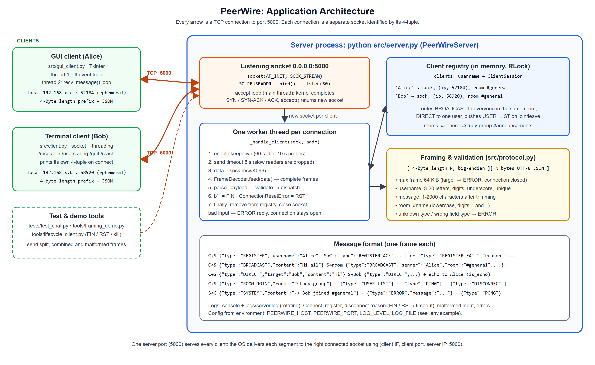

Everything you need to understand, run, demonstrate and defend
your CSC 423 multi-user TCP chat application
Jemimah Omojo Attah · CSC 423: Data Communication and Networking
Lecturer: Mr. Thomas Baidoo · November 2026
PeerWire is a chat application. One program, the server, runs on a computer and waits for
connections on TCP port 5000. Other programs, the clients, connect to it. You have two clients: a
desktop window (src/gui_client.py) and a terminal version (src/client.py). Each user picks a
username and can chat in rooms (#general, #study-group, #announcements) or send private
messages.
Every client keeps one TCP connection open to the server for the whole session. When Alice types a message, her client sends it over her connection; the server receives it and sends a copy over Bob's connection. Clients never talk directly to each other; everything goes through the server.
The point of the assignment is not the chat itself, it is to show you understand the transport layer: what a socket is, what ports do, how TCP connections start and end, why TCP needs message framing, and how TCP compares with UDP. Your lecturer said a working app without a clear explanation is not enough, so the explanations in this guide matter as much as the code.
| Requirement | Where / status |
|---|---|
| Server accepting many clients | src/server.py, one thread per client. Done. |
| Client using TCP | src/gui_client.py, src/client.py. Done. |
| Username identification | REGISTER message, 3–20 letters/digits/underscore, unique. Done. |
| Real-time messaging, 2+ users | BROADCAST to room, pushed instantly. Done. |
| Group or one-to-one chat | Both: rooms and DIRECT messages. Done. |
| Connect / disconnect / crash handling | _handle_client in server.py; FIN, RST, keepalive, send timeout. Done. |
| Documented message format | docs/protocol.md, report §4.3. Done. |
| Explicit framing; split and combined reads shown | FrameDecoder in protocol.py; tools/framing_demo.py; tests. Done. |
| Validation, malformed input, logs | ERROR replies, logs/server.log. Done. |
| 3 simultaneous clients incl. reconnect | Automated test 08. Done (manual screenshot pending). |
| Seven TCP/UDP questions + framing + failure + captures | Report §5. Written; capture discussion pending. |
| Experiments 1–4 with .pcap files | experiments/run_experiments.sh (Linux). PENDING run. |
| UDP sender/receiver, ≥100 numbered messages, baseline + loss | tools/tcp_udp_compare.py. Windows baseline done; Linux loss runs PENDING. |
| Cloud deployment (Azure), diagram, steps, evidence, security, cost | PENDING (on hold). |
| README, report, diagrams, test log | README.md, docs/PeerWire_Technical_Report.docx, docs/architecture_diagram.png, docs/test-log.md. |
The network layer (IP) moves packets from one computer to another using IP addresses, but it is "best effort": packets can be lost, duplicated or arrive out of order, and IP does not know which program on the computer the data is for. The transport layer (TCP or UDP) adds port numbers so data reaches the right program (process-to-process delivery). TCP additionally makes the delivery reliable and ordered.
192.168.0.10, or 127.0.0.1 for "this same computer", called loopback).socket.socket(AF_INET, SOCK_STREAM). AF_INET = IPv4, SOCK_STREAM = TCP. (UDP would be SOCK_DGRAM.)socket() create the TCP socket
setsockopt(SO_REUSEADDR) allow quick restart while old connections are in TIME_WAIT
bind(("0.0.0.0", 5000)) attach it to port 5000 on every network interface
listen(50) become a passive "listening" socket (queue of up to 50 pending connections)
accept() wait; returns a NEW socket for each client + the client's (IP, port)
Important: the listening socket never carries chat data. Each accept() returns a brand-new socket for
one client. The client side just does connect((host, 5000)).
Client Server | --- SYN (seq = x) -------------------> | "I want to connect, my starting number is x" | <-- SYN-ACK (seq = y, ack = x+1) ------- | "OK, mine is y, I expect x+1 next" | --- ACK (ack = y+1) ------------------> | "Got it" | connection ESTABLISHED |
The operating system does this, not your Python code. connect() returns on the client, and
accept() returns on the server, after it completes. Sequence numbers count bytes; the
acknowledgement number says "I have received everything up to here, send me this byte next". Wireshark shows
them as relative numbers (starting from 0) by default.
What TCP does not guarantee: message boundaries, a maximum delay, or that the other application actually processed the data. After a connection breaks, you cannot know which of your last bytes the other program read.
TCP is a byte stream, like water in a pipe. If Alice's client sends "Hello" then "How are you", the server's
recv() might return HelloHow are you in one go (combined), or Hel and then
lo (split). TCP remembers the order of bytes but not where one send() ended. So the
application must mark message boundaries itself. PeerWire uses a length prefix:
[ 00 00 00 0F ] [ {"type":"PING"} ]
4 bytes = 15 15 bytes of JSON
The receiver keeps a buffer: wait until it has 4 bytes, read the length N, wait until it has N more bytes, cut
that message out, repeat with whatever is left. struct.pack(">I", n) makes the 4 bytes: > means
big-endian (network byte order), I means unsigned 32-bit integer. The alternative is newline-delimited JSON
(one message per line); both are acceptable. UDP does not need framing because each datagram arrives whole or not at all.
| Case | On the wire | What the server's code sees |
|---|---|---|
Normal close (/quit) | FIN → ACK, then FIN → ACK the other way (four-way close) | recv() returns b"" (empty) = end of stream |
Abort (/crash) | One RST packet | ConnectionResetError exception |
| Program killed | The OS closes the socket: usually FIN | Looks like a normal close |
| Cable pulled / power off | Nothing at all | Nothing, until keepalive probes fail or a send times out |
TIME_WAIT: the side that closes first waits a short time (up to a few minutes) so stray old packets cannot
confuse a new connection with the same 4-tuple. That is why the server sets SO_REUSEADDR: otherwise
restarting it straight away could fail with "Address already in use".
/crash and SO_LINGER: setting SO_LINGER to "on, 0 seconds" tells the OS: on close, throw away
unsent data and send RST instead of FIN. That is how the client simulates a crash on purpose.
Keepalive: if a client disappears silently, TCP would never notice on its own. PeerWire turns on keepalive:
after 60 s of silence the OS sends small probe packets every 10 s; if they go unanswered the connection is declared
dead and recv() fails, so the server cleans up.
| TCP | UDP | |
|---|---|---|
| Connection | Yes (handshake) | No |
| Lost data | Retransmitted | Gone; nobody is told |
| Order | Guaranteed | Not guaranteed |
| Boundaries | None (byte stream) | Each datagram is one message |
| Header | 20–60 bytes | 8 bytes |
| Good for | chat messages, web, files, SSH | voice/video calls, games, DNS, typing indicators, presence |
In chat, the messages must use TCP (losing or reordering a message is unacceptable). Typing indicators and online/away presence could use UDP: they are sent often, and if one is lost the next one replaces it.
PeerWire does not use a browser, so there are no WebSockets. If asked: a WebSocket is a protocol that starts as an HTTP request and then keeps a single TCP connection open, with its own framing (each frame has a header with the payload length). So it is still TCP underneath.

{"type":"BROADCAST","content":"Hi"}, send_message() turns it into JSON bytes, puts the 4-byte length in front and calls sendall().recv(4096) with some bytes.FrameDecoder.feed() adds them to the buffer and returns every complete frame. parse_payload() checks it is valid UTF-8 JSON with a type._dispatch_message() sees BROADCAST, checks the content (1–2000 characters), and finds Alice's room._broadcast_chat() copies the list of everyone in #general (under the lock), then sends each one {"type":"BROADCAST","sender":"Alice","room":"#general","content":"Hi","timestamp":...}.recv_message(); it reads 4 bytes, then exactly N bytes, decodes the JSON and the GUI shows the line.Server: the main thread loops on accept(); each client gets its own worker thread running
_handle_client. The shared dictionary clients (username → session) is protected by a lock so two
threads never change it at the same time. Clients: one thread for the user interface or keyboard, one thread
that only reads from the socket, so incoming messages appear even while you are typing.
HEADER_STRUCT = struct.Struct(">I"): the 4-byte length prefix.MAX_FRAME_BYTES = 64 KiB, MAX_MESSAGE_CHARS = 2000, USERNAME_RE, ROOM_RE: validation limits.encode_frame(dict): JSON-encode and add the length prefix.FrameDecoder.feed(bytes): the incremental framer used by the server (handles split and combined reads).parse_payload(bytes): raises ProtocolError for bad UTF-8, bad JSON, non-object, missing type.recv_exact() / recv_message(): blocking helpers the clients use: loop until exactly N bytes have arrived (because recv(n) may return fewer than n).abort_connection(sock): SO_LINGER 0 + close = RST.configure_logging(): console + logs/server.log; LOG_LEVEL=DEBUG adds a line per read.enable_keepalive(), set_send_timeout(): detect dead clients; drop clients that stop reading (5 s).start() → _accept_loop(): socket, bind, listen, accept, one thread per client._handle_client(): the per-connection loop. recv → feed → parse_payload → register or dispatch. Its except branches are the lifecycle: b"" = FIN, ConnectionResetError = RST, FrameTooLarge = oversized, anything else = logged but never crashes the server. The finally block always cleans up._handle_unregistered(): validates the username, rejects duplicates._dispatch_message(): routes BROADCAST, DIRECT, ROOM_JOIN, USER_LIST, PING; unknown types get ERROR._send(): sends to one client; if sending fails it shuts that socket down, which makes its own thread exit and clean up.main(): port from the command line, else PEERWIRE_PORT, else 5000.Both: connect, print/show the local and server address, send REGISTER, wait for REGISTER_ACK, start a receiver
thread, then send what the user types. Terminal commands: /msg user text, /join #room,
/users, /ping, /quit (FIN), /crash (RST). The GUI also has an RGB colour theme.
framing_demo.py: sends 3 messages in one write, 1 message in 3 writes, and a malformed one. Proves framing live.tcp_udp_compare.py: separate TCP and UDP echo test with numbered messages; writes CSV files.lifecycle_client.py: quit / crash / hang (to be killed) for Experiment 3.test_framing.py (7 unit tests on the framer) and test_chat.py (10 tests over real sockets: chat, DMs,
malformed input, split/combined frames, 3 clients with RST and reconnect, oversized frame, log file). All 17 pass.
Open the project folder in a terminal (VS Code: Terminal → New Terminal).
# 1. Tests (should say "Ran 17 tests ... OK") python -m unittest discover -s tests -v # 2. Server python src/server.py 5000 # 3. Clients (each in a new terminal) python src/gui_client.py # Alice python src/gui_client.py # Bob python src/client.py --host 127.0.0.1 --port 5000 --user Carol # 4. Framing demo: restart the server with debug logging first (PowerShell) $env:LOG_LEVEL="DEBUG"; python src/server.py 5000 python tools/framing_demo.py --port 5000 # 5. TCP vs UDP comparison python tools/tcp_udp_compare.py server --host 127.0.0.1 --port 6000 python tools/tcp_udp_compare.py client --proto udp --count 100 --label test python tools/tcp_udp_compare.py client --proto tcp --count 100 --label test # 6. See sockets (Windows) netstat -ano | findstr :5000
Rebuild the report after new results: python docs/report/build_report.py. Open the .docx in Word,
click Yes when asked to update fields (this fills the table of contents), then File → Save As → PDF.
ipconfig (IPv4 Address). Allow the port through Windows Firewall (PowerShell as administrator):New-NetFirewallRule -DisplayName "PeerWire 5000" -Direction Inbound -Protocol TCP -LocalPort 5000 -Action AllowThe lecturer requires: two clients on the deployed server, messages both ways, disconnect and reconnect, and your explanation of IP, port, socket and framing. Practise this until it is smooth (about 5 minutes).
sudo systemctl status peerwire, sudo journalctl -u peerwire -f). Say: "It listens on 0.0.0.0 port 5000, a TCP socket."[CONNECT] TCP connection from <ip>:<port>. Say: "The handshake is done by the OS; accept() gave the server a new socket for Alice; that number is her ephemeral port."/msg Alice hi.framing_demo.py and show the read N bytes -> K frames lines./quit. Log: "client sent DISCONNECT". Alice sees "Bob has disconnected"./crash. Log: "connection reset by peer (RST received)". Say: "RST instead of FIN; the server cleans up in the finally block either way."| Task | What to do |
|---|---|
| "Change the listening port to 6001" | Stop the server (Ctrl+C), run python src/server.py 6001 (on Azure: edit PEERWIRE_PORT in .env, sudo systemctl restart peerwire, and add an NSG rule for 6001). Connect clients to 6001. Explain the old port now refuses connections. |
| "This client cannot connect, diagnose it" | Read the error. Connection refused = the machine answered with RST: nothing is listening on that port (server down or wrong port). Check with netstat -ano | findstr :5000 / ss -tlnp. Timed out = no answer at all: wrong IP, or a firewall/NSG is silently dropping the SYN. Check the IP, the Azure NSG rule, sudo ufw status, and that the server binds 0.0.0.0, not 127.0.0.1. Username already taken = an old session still registered. |
| "Explain this packet capture" | Find SYN / SYN-ACK / ACK (handshake), the PSH,ACK data segments (the first 4 bytes of the payload are the length), the ACKs, then FIN or RST at the end. Read off the source and destination IP and ports, and the seq/ack numbers. |
| "Show me framing" | Run framing_demo.py with the server in DEBUG mode. |
Everything marked with yellow PENDING in the report needs real evidence. Never fill these in with invented numbers or screenshots; the lecturer will check them live.
Your laptop has no Linux and no Wireshark yet. The easiest option is to run the script on the Azure Ubuntu VM
once it exists (it only changes that VM's loopback interface, which you own). Alternatively install WSL
(wsl --install as administrator, then reboot).
sudo apt-get install -y tcpdump iproute2 tshark bash experiments/run_experiments.sh # then copy experiments/results/ back to the laptop, e.g.: scp -r azureuser@<IP>:~/Jemi-chat-app/experiments/results ./experiments/
Install Wireshark on the laptop (wireshark.org) and open each .pcap. Useful display filters:
tcp.flags.syn==1, tcp.analysis.retransmission, tcp.flags.fin==1 || tcp.flags.reset==1,
and add the column Calculated window size. Take screenshots, add arrows/labels (e.g. in Paint), insert them in
the report, then run python docs/report/build_report.py again; the comparison table fills itself from
summary.csv.
git clone https://github.com/Jemi-cpu/Jemi-chat-app, cp .env.example .env, run deploy/setup_cloud_vm.sh.<public IP>:5000; screenshot both windows and the server log.systemctl start|restart|stop peerwire), cleanup (delete the resource group), cost statement.docs/report/build_report.py, change MATRIC = "VUG/CSC/XX/XXXX", then rebuild.| ACK | Acknowledgement; says which byte the receiver expects next. |
| Big-endian | Most significant byte first; "network byte order". |
| Ephemeral port | Temporary client-side port chosen by the OS. |
| FIN | Flag meaning "I have finished sending"; orderly close. |
| Frame | One complete application message as sent on the stream (length + JSON). |
| Keepalive | Probe packets on an idle connection to check the other side still exists. |
| Loopback | 127.0.0.1, traffic that never leaves the machine. |
| MSS | Maximum Segment Size, largest TCP payload per segment. |
| Nagle's algorithm | Combines small writes into fewer segments; disabled with TCP_NODELAY. |
| netem | Linux tool (part of tc) that adds artificial delay, loss or jitter. |
| NSG | Azure Network Security Group, the cloud firewall. |
| pcap | Packet capture file, opened in Wireshark. |
| RST | Reset flag; aborts a connection immediately. |
| RTT | Round-trip time: send to reply. |
| Segment | One TCP packet (header + some bytes of the stream). |
| SYN | Flag used to open a connection and set the initial sequence number. |
| TIME_WAIT | Waiting state after closing, to absorb stray old segments. |
| Window (rwnd) | Receive buffer space the receiver advertises; basis of flow control. |
Generated for Jemimah Omojo Attah's CSC 423 project. Source: repository https://github.com/Jemi-cpu/Jemi-chat-app.